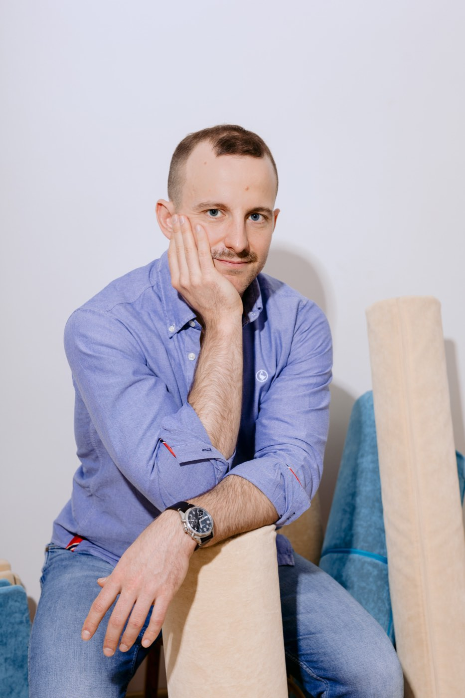
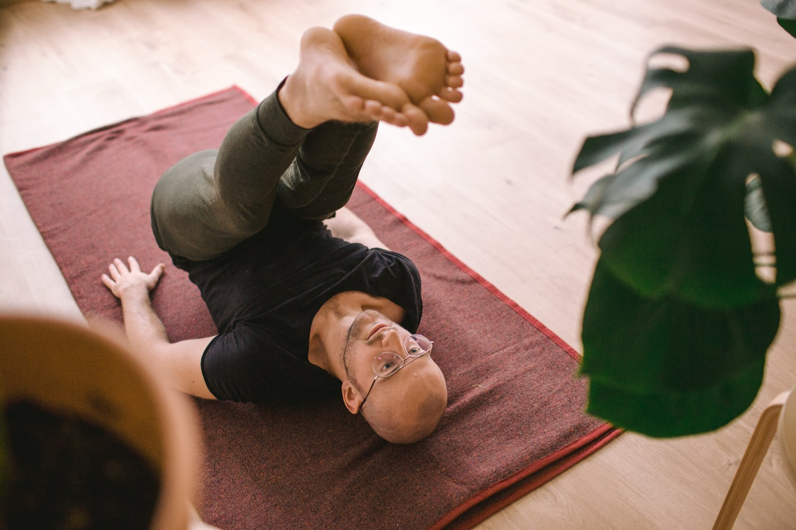
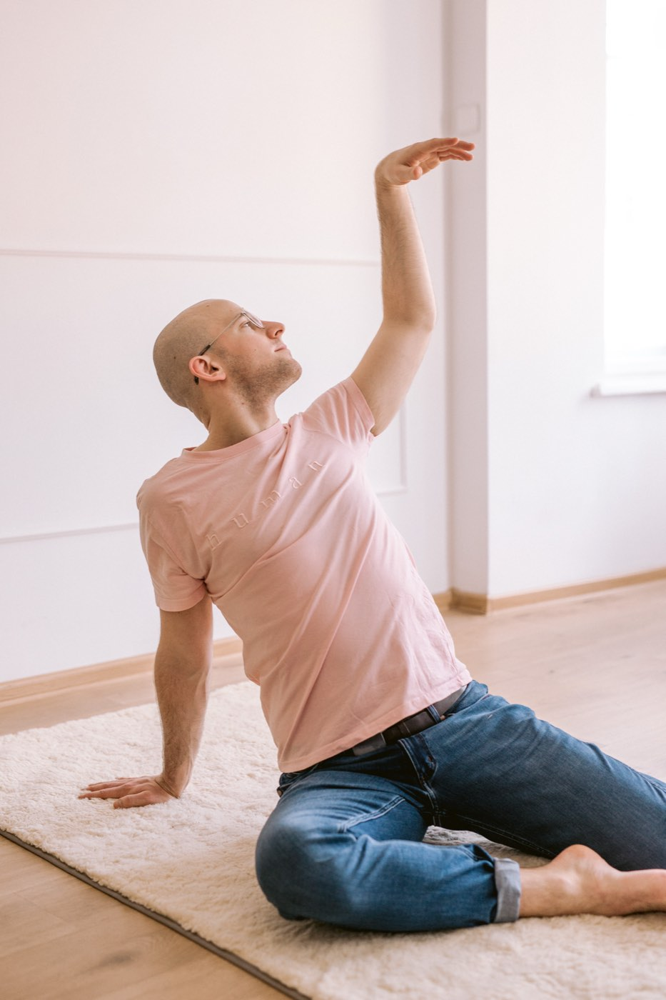

Kreatywny
Nauczyciel
Ucz ruchu tak, żeby ludzie naprawdę się uczyli - nie tylko wykonywali instrukcje.
30-godzinny program rozwoju warsztatu dla nauczycieli jogi, pilatesu, ruchu i edukacji somatycznej. Przez dwa intensywne weekendy rozwiniesz bardziej precyzyjny, elastyczny i adaptacyjny sposób prowadzenia - bez gotowych sekwencji, sztywnych korekt i pseudonaukowych wyjaśnień.

Uczysz dobrze.
Ale czasem utykasz w schematach.
- Wracasz do tych samych sekwencji.
- Używasz tych samych wskazówek niezależnie od grupy.
- Kiedy uczestnik czegoś nie rozumie, dodajesz kolejne instrukcje.
- Chcesz prowadzić bardziej kreatywnie, ale nie chcesz improwizować bez kierunku.
- Boisz się odejść od planu, bo zajęcia mogą stracić strukturę.
- Uczestnicy często patrzą na Ciebie, żeby sprawdzić, czy wykonują ruch poprawnie.
- Trudno Ci wyjaśnić, dlaczego wybierasz określone zadanie.
- Czujesz opór wobec popularnych, ale nieprecyzyjnych wyjaśnień dotyczących ciała.
Problemem nie zawsze jest brak nowych ćwiczeń. Czasem potrzebujesz innego sposobu patrzenia na to, co dzieje się podczas uczenia.
Dwa sposoby prowadzenia tych samych zajęć.
Prowadzenie jako przekazywanie instrukcji
- Pokaż formę.
- Wyjaśnij.
- Popraw błąd.
- Powtórz.
- Doprowadź do właściwego wykonania.
Prowadzenie jako projektowanie uczenia
- Stwórz warunki do zauważenia różnicy.
- Skieruj uwagę.
- Zaproponuj ograniczenie lub możliwość.
- Obserwuj odpowiedź.
- Zmieniaj zadanie w zależności od tego, co się wydarza.
Nie chodzi o to, żeby przestać instruować. Chodzi o to, żeby wiedzieć, kiedy instrukcja pomaga, a kiedy ogranicza uczenie.
Po programie nie będziesz mieć jednej nowej recepty. Będziesz mieć więcej możliwości.
Precyzyjniej obserwować
Zauważysz nie tylko to, czy ktoś wykonuje ruch, ale na co kieruje uwagę, jak organizuje wysiłek i jakie możliwości potrafi rozróżnić.
Świadomiej używać języka
Zrozumiesz, jak różne instrukcje, pytania i metafory wpływają na uwagę i działanie uczestników.
Projektować celową zmienność
Będziesz tworzyć sensowne warianty ćwiczeń bez dokładania przypadkowej złożoności.
Adaptować zajęcia
Zareagujesz na grupę, nie porzucając struktury ani intencji lekcji.
Wspierać sprawczość
Pomożesz uczestnikom lepiej zauważać, wybierać i uczyć się, bez uzależnienia od ciągłej korekty.
Jeden spójny sposób pracy
Te umiejętności nie są osobnymi trikami. Składają się na spójne podejście, które zintegrujesz z własną metodą.
Co będziemy robić
To program pracy, nie wykładów. Każdy dzień łączy doświadczenie ruchowe, analizę, dyskusję, projektowanie i praktykę prowadzenia.
- Doświadczać zadań ruchowych z perspektywy ucznia.
- Analizować, co dokładnie tworzy warunki do uczenia.
- Przekształcać zamykające instrukcje w bardziej otwarte zadania.
- Obserwować, jak język wpływa na sposób działania.
- Projektować warianty bez przypadkowego mnożenia ćwiczeń.
- Analizować realne sytuacje z własnych zajęć.
- Prowadzić krótkie fragmenty zajęć.
- Otrzymywać konkretną informację zwrotną.
- Testować wybrane podejście między weekendami.
- Stworzyć indywidualny plan dalszego rozwoju.
Pięć zmian w sposobie prowadzenia
-
01
Formy
Organizacji działania
Zamiast pytać tylko, czy ruch wygląda poprawnie, przyglądasz się, jak człowiek organizuje uwagę, wysiłek, podparcie i kierunek. Przykład: uczestnik "spina bark" - zamiast go rozluźniać, zmieniasz punkt podparcia i napięcie znika samo.
-
02
Korekty
Różnicowania
Zamiast od razu zastępować ruch "właściwą" wersją, pomagasz uczącemu się zauważyć istotne różnice. Przykład: prosisz o wykonanie ruchu raz z mniejszym, raz z większym zakresem - różnica staje się informacją.
-
03
Instrukcji
Środowiska uczenia
Zamiast kontrolować każdy szczegół, projektujesz zadanie, w którym pojawia się użyteczna informacja. Przykład: zmieniasz ustawienie stóp tak, że uczestnik sam czuje, gdzie traci równowagę.
-
04
Odtwarzania
Adaptacji
Zamiast realizować tę samą sekwencję niezależnie od sytuacji, zachowujesz intencję i zmieniasz środki. Przykład: część grupy nie jest gotowa na wariant leżący, więc przenosisz tę samą zasadę do pozycji siedzącej.
-
05
Zależności
Sprawczości
Zamiast uzależniać ucznia od swojej akceptacji, pomagasz mu wypracować własne kryteria zauważania i wyboru. Przykład: zamiast "dobrze / źle" pytasz "która wersja była dla Ciebie lżejsza?".
Dwa weekendy.
Jedna spójna droga uczenia.
Między weekendami nie odkładasz materiału na później. Sprawdzasz wybrane podejścia podczas własnych zajęć, obserwujesz reakcje uczestników i wracasz z konkretnym doświadczeniem do dalszej pracy.
Weekend I
Poznajesz i ćwiczysz nowe ramy pracy.
Praktyka w Twoich zajęciach
Testujesz wybrane podejścia i obserwujesz, co się zmienia.
Weekend II
Analiza, praktyka prowadzenia i informacja zwrotna.
Wdrożenie
Wychodzisz z indywidualnym planem dalszej pracy.
Widzieć i prowadzić inaczej
Od ćwiczenia do środowiska uczenia
- Czym różni się wykonywanie od uczenia.
- Czego uczestnik może się nauczyć dzięki jednemu zadaniu.
- Jak kierowanie uwagi zmienia działanie.
- Jak rozpoznawać intencję ćwiczenia.
- Jak przestać traktować zajęcia jako listę ruchów.
Język, który otwiera
- Różnica między instrukcją, pytaniem, obrazem i ograniczeniem.
- Jak język wpływa na uwagę.
- Kiedy instrukcja pomaga.
- Kiedy instrukcja przeciąża lub zamyka.
- Jak mówić precyzyjnie bez udawania naukowej pewności.
- Jak ograniczać automatyczne poprawianie.
Różnicowanie i zmienność
- Czym różni się celowa zmienność od przypadkowej improwizacji.
- Jak używać kontrastu.
- Jak tworzyć warianty wokół jednej intencji.
- Jak dawkować trudność.
- Jak pomagać uczestnikom zauważać różnice.
- Jak projektować lekcje, które nie opierają się na jednej idealnej formie.
Sprawdzasz materiał w praktyce
- Wybierasz jeden lub dwa eksperymenty dydaktyczne.
- Stosujesz je podczas własnych zajęć.
- Obserwujesz reakcje uczestników.
- Zapisujesz krótkie notatki.
- Wybierasz jedną trudną lub ciekawą sytuację.
- Przynosisz tę sytuację na Weekend II.
Nie chodzi o wykonanie dużego zadania domowego. Chodzi o zebranie realnych danych z własnej pracy.
Dzięki temu drugi weekend nie będzie tylko kontynuacją materiału. Będzie pracą na tym, co wydarzyło się w Twoim nauczaniu.
Adaptacja, sprawczość i własny sposób prowadzenia
Trudniejsze działania bez forsowania
- Jak przygotowywać uczestników do bardziej złożonych działań.
- Jak używać stopniowania i warunków wstępnych.
- Jak zmieniać trudność bez upraszczania celu.
- Jak odróżniać wyzwanie od przeciążenia.
- Jak wspierać eksplorację bez obietnic idealnej techniki.
Adaptacyjne prowadzenie i sprawczość ucznia
- Jak reagować na różne odpowiedzi w grupie.
- Jak modyfikować zadanie bez tracenia kierunku.
- Jak zadawać pytania, które nie sugerują jedynej prawidłowej odpowiedzi.
- Jak redukować zależność od korekty.
- Krótkie laboratoria prowadzenia.
- Informacja zwrotna od Artura i grupy.
Integracja i własny system pracy
- Jak łączyć język, uwagę, zmienność i strukturę.
- Jak projektować lekcję wokół intencji.
- Jak oceniać, czy zadanie rzeczywiście wspiera uczenie.
- Jak tworzyć własne kryteria decyzji.
- Indywidualny plan wdrożenia.
- Dalsze eksperymenty po zakończeniu programu.

Jak wygląda jeden dzień
Każdy dzień łączy krótkie części koncepcyjne z doświadczeniem, rozmową i praktyką. Ruch nie jest ilustracją teorii - jest jednym z głównych sposobów badania tego, jak zachodzi uczenie.
- AKrótkie wprowadzenie
Ramy dnia i pytanie, wokół którego pracujemy.
- BDoświadczenie ruchowe
Pracujesz z perspektywy ucznia.
- CAnaliza doświadczenia
Co dokładnie stworzyło warunki do uczenia.
- DPraca w parach lub małych grupach
Testujesz i porównujesz podejścia.
- EProjektowanie zadań
Budujesz warianty wokół jednej intencji.
- FLaboratorium prowadzenia
Prowadzisz krótki fragment zajęć.
- GInformacja zwrotna
Konkretny feedback od Artura i grupy.
- HIntegracja i przerwy
Czas na przyswojenie i odpoczynek.
Co może zmienić się w Twoim prowadzeniu
Precyzyjniejszy język
Wybierasz między instrukcją, pytaniem, obrazem i ograniczeniem zależnie od zamierzonego efektu.
Przykład: zamiast dodawać trzy korekty anatomiczne, zmieniasz to, na co uczestnik kieruje uwagę.
Więcej możliwości adaptacji
Zmieniasz zadanie, zachowując jego intencję dydaktyczną.
Przykład: gdy proponowany ruch nie działa dla części grupy, masz opcje inne niż "zrób mniej" albo "pomiń".
Świadome używanie zmienności
Wiesz, dlaczego wprowadzasz wariant i jaką różnicę uczący się może zauważyć.
Przykład: nie dodajesz alternatyw tylko po to, żeby lekcja była ciekawsza.
Mniejsza zależność od korekt
Projektujesz sytuacje, w których uczestnicy dostają więcej użytecznej informacji z samego zadania.
Przykład: zamiast wielokrotnie poprawiać pozycję, wprowadzasz kontrast, który czyni różnicę wyczuwalną.
Własny, spójny sposób prowadzenia
Integrujesz materiał z własną metodą, zamiast kopiować styl Artura.
Przykład: nauczyciel jogi, nauczyciel pilatesu i praktyk Feldenkraisa zastosują te same zasady inaczej.
Co zmienia się w sposobie prowadzenia
To pierwsza stacjonarna edycja tego programu. Opinie uczestników pojawią się tutaj po pierwszym zjeździe - nie wstawiam wymyślonych rekomendacji.
Jeśli chcesz porozmawiać z kimś, kto pracował ze mną wcześniej - na warsztatach dla nauczycieli, w mentoringu lub w ramach szkolenia Feldenkraisa - napisz w zgłoszeniu, a chętnie połączę Cię z taką osobą.

Prowadzi Artur Chruszcz
Certyfikowany praktyk metody Feldenkraisa · 13+ lat pracy z ruchem
Nie chcę uczyć jednej poprawnej metody prowadzenia. Chcę pomóc Ci widzieć więcej możliwości i trafniej wybierać między nimi.
Stworzyłem ten program, ponieważ coraz częściej widzę, że nauczycielom nie brakuje ćwiczeń. Brakuje im języka i ram, które pozwalają podejmować dobre decyzje wtedy, gdy realna grupa nie reaguje tak, jak przewidywał plan.
Od ponad trzynastu lat uczę ruchu - indywidualnie, w grupach, na warsztatach i w pracy z nauczycielami. Jestem certyfikowanym praktykiem metody Feldenkraisa. Od lat interesuje mnie to, jak ludzie się uczą: uwaga, różnicowanie, zmienność i adaptacja.
Zależy mi na precyzyjnej i uczciwej komunikacji. W pracy łączę metodę Feldenkraisa z kontekstualnymi podejściami behawioralnymi i teorią uczenia się tam, gdzie rzeczywiście pomaga to lepiej rozumieć, co dzieje się na zajęciach.
Dla kogo jest ten program
Ten program jest dla Ciebie, jeśli
- Już uczysz ruchu.
- Chcesz rozwijać metodykę, a nie zbierać sekwencje.
- Chcesz adaptować zajęcia, nie tracąc struktury.
- Interesuje Cię to, jak ludzie się uczą.
- Chcesz komunikować się precyzyjniej.
- Zależy Ci na większej samodzielności uczestników.
- Cenisz praktyczne eksperymentowanie.
- Nie boisz się kwestionować znanych założeń.
Prawdopodobnie nie teraz, jeśli
- Szukasz głównie gotowych planów zajęć.
- Oczekujesz jednej idealnej techniki.
- Chcesz szybkiego certyfikatu przy minimalnym udziale.
- Nie chcesz ćwiczyć prowadzenia.
- Wolisz system oparty na ścisłej korekcie i powtarzaniu.
- Szukasz wyłącznie teoretycznego cyklu wykładów.
Inwestycja we własny sposób prowadzenia
To nie jest kurs z kolejnymi sekwencjami do zapisania. Przez dwa weekendy będziemy pracować nad tym, jak obserwujesz uczenie, jak projektujesz zadania, jak używasz języka i jak podejmujesz decyzje w kontakcie z realną grupą.
Cena promocyjna Pierwsze 4 miejsca
Dla pierwszych czterech przyjętych osób.
Cena regularna Kolejne miejsca
Po wyczerpaniu miejsc promocyjnych.
Cena nie wynika wyłącznie z liczby godzin. Wynika z formatu, który pozwala każdej osobie eksperymentować, prowadzić i otrzymać konkretną informację zwrotną.
Co składa się na tę cenę:
- 30 godzin pracy stacjonarnej.
- Dwa trzydniowe moduły.
- Mała grupa - maksymalnie 12 osób.
- Doświadczenia ruchowe.
- Analiza rzeczywistych sytuacji z Twoich zajęć.
- Praktyczne laboratoria prowadzenia.
- Konkretna informacja zwrotna.
- Eksperyment wdrożeniowy między weekendami.
Dlaczego tylko 12 osób?
Każdy uczestnik powinien mieć możliwość nie tylko słuchania i doświadczania ruchu, ale również zadawania pytań, prowadzenia, eksperymentowania i otrzymania konkretnej informacji zwrotnej.
To wymaga czasu, uwagi i grupy, w której można naprawdę zobaczyć sposób pracy każdej osoby.
Jak wygląda zgłoszenie
Wypełniasz krótki formularz.
Artur czyta zgłoszenie i odpowiada osobiście.
Jeśli program jest dobrym dopasowaniem, otrzymujesz potwierdzenie i dane płatności.
Po opłaceniu udziału Twoje miejsce zostaje potwierdzone.
Formularz pomaga mi zadbać o to, żeby program odpowiadał doświadczeniu i potrzebom grupy. Nie jest egzaminem.
Zgłoś się do edycji 2027
Dwa weekendy.
30 godzin.
Maks. 12 osób.
Lipiec i sierpień 2027.
Piątek-niedziela, 5 godzin dziennie.
Gdańsk. Grupa do 12 osób.
Dziękuję za zgłoszenie.
Przeczytam je i odpowiem osobiście na podany adres email.
Zanim się zgłosisz
01Czy program jest odpowiedni dla początkujących nauczycieli?
02Czy to kurs układania sekwencji?
03Czy program będzie praktyczny?
04Czy program jest tylko dla nauczycieli jogi lub pilatesu?
05Czy trzeba znać metodę Feldenkraisa?
06Jak wygląda pięciogodzinny dzień?
07Co dzieje się między weekendami?
08Co, jeśli nie prowadzę zajęć między weekendami?
09Czy zajęcia będą nagrywane?
10Czy można płacić w ratach?
11Gdzie odbędzie się program?
12Czy cena obejmuje nocleg i wyżywienie?
13Co, jeśli nie jestem pewien, czy program jest dla mnie?
Nie potrzebujesz więcej ćwiczeń do zapisania.
Potrzebujesz sposobu, który pozwala widzieć więcej, podejmować lepsze decyzje i tworzyć realne warunki do uczenia.
Dwa weekendy · lipiec i sierpień 2027 · Gdańsk · 30 godzin · maksymalnie 12 osób
4 490 zł · pierwsze 4 miejsca · 4 990 zł · cena regularna